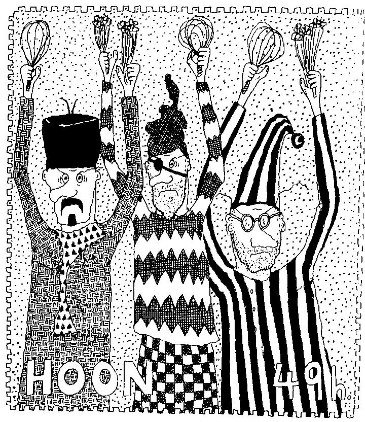

Tuesday, December the 13th, 2011
back to: title, date or indexes
Those of you who have been following the doings of Mr Key for an improbable length of time will know that in the final decade of the twentieth century I produced four—or was it five?—Hooting Yard Calendars. Certain persons have tried to cajole me into reviving this undoubted boon to the date-befuddled, but for the time being you are going to have to make do with the pale shadow of the calendar proper that is this year's Hooting Yard Advent Calendar. Today's picture, however, is the sole remnant of an abortive calendar, from (I think) 1996, which was to be entitled something along the lines of Treasures From The Istvan Plunkett Postage Stamp Collection. This one shows, according to my notes, “a trio of ne'er-do-wells brandishing whisks and celery”.
